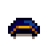
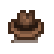

Sombreros
Los Sombreros son vestimentas cosméticas que alteran la apariencia del jugador pero no tienen ningún otro efecto.
Los sombreros no pueden ser vendidos a través de la Caja de envíos, en la Casa en ruinas, o cualquier otra tienda en el juego.
Obtención de sombreros
Cuando el jugador obtiene su primer Logro, recibirá una carta del ratón en la Casa en ruinas, avisándoles de que ya se pueden comprar sombreros allí. La mayoría de los logros desbloquean nuevos sombreros, los cuales pueden ser comprados por  1000o.
1000o.
Algunos sombreros sólo pueden obtenerse en determinados festivales, el Casino, el Gremio de Aventureros, o las salas del tesoro en la Caverna Calavera.
Los sombreros también se pueden confeccionar en la máquina de coser de la Casa de Emily.
Hay una pequeña posibilidad de recibir ciertos sombreros al matar Monstruos, rompiendo cajas y barriles, talando o sacudiendo Árboles con semillas, Excavando lugares de artefacto, o al usar Bateas. Los detalles se encuentran en sus respectivas páginas[1]
| Imagen | Nombre | Descripción | Logro | Obtención |
|---|---|---|---|---|

|
Sombrero de sheriff | El cuero está desgastado y agrietado, pero aún es flexible. Huele a humedad. | Una Colección Completa | Completa la colección del Museo. |

|
Bombín | Hecho de fieltro suave. | Millonario | Obtén |

|
Sombrero de copa | Un clásico entre los caballeros. | Comprado por | |
| Sombrero mexicano | Un sombrero de paja profusamente decorado. | Leyenda | Obtén | |

|
Sombrero de paja | Ligero y fresco, el sueño de todo granjero. | Gana la cacería de huevos en el Festival del huevo. | |
|  | Gorra formal | Pudo haber pertenecido a un policía o un cartero. Es muy suave y no huele mal. | Lobo de Mar | Atrapa 24 peces diferentes. |

|
Casquete azul | Vuelve a una época más sencilla con este casquete de la pradera. | Tesoro Escondido | Dona 40 objetos diferentes al Museo. |

|
Gorro ciruela | No está mal. | Chef Ayudante | Cocina 25 recetas diferentes. |

|
Máscara huesuda | Sus ojos rojos brillan misteriosamente. | Erradicación de Monstruos - Derrota a 50 Esqueletos. | |

|
Máscara de trasgo | Asusta a los vecinos con esta máscara espeluznante. Con orejas puntiagudas para dar más realismo. | Envío Completo | Envía todos los objetos. |

|
Máscara de gallina | Seguro que con esto puesto haces sonreír a todos. | Una Gran Ayuda | Completa 40 misiones de "Necesito ayuda." |

|
Orejeras | Mantén tus orejas calentitas. Forradas de terciopelo artesanal de Villa Castillo. | Popular | Alcanza 5 corazones de amistad con 20 personas. |

|
Lazo delicado | Si te fijas bien verás pequeñas joyas rosas que brillan. | Cocinero | Cocina 10 recetas diferentes. |

|
Clip tropical | Tiene forma de palmera, pero en miniatura. | Mejorando | Mejora tu casa. |

|
Lazo de mariposa | Es muy suave. | Una Nueva Amistad | Alcanza 5 corazones de amistad con alguien. |

|
Gorra de cazador | El forro de lana se mantiene caliente incluso en lo más profundo del bosque. | Viviendo A Lo Grande | Mejora tu casa al tamaño máximo. |

|
Gorra de camionero | Con rejilla en la parte trasera para mantener fresca la cabeza. | Artesano | Fabrica 30 objetos diferentes. |

|
Gorra de marinero | Fresca y almidonada. | Gana la competencia de pesca en el Festival del Hielo. | |

|
Gorra vieja | Una gorra antigua con la visera arrugada. Parece que ha vivido mucho. | Principiante | Obtén |
|  | Fedora | Todo un clásico entre los urbanitas. | Comprado por | |

|
Gorra molona | Está muy descolorida, pero solía ser azul intenso. | Terrateniente | Obtén |

|
Lazo de la suerte | El centro está hecho de oro macizo. | Vaquero | Obtén |

|
Lazo de lunares | Seguro que atraerás todas las miradas. | Recadero | Completa 10 misiones de "Necesito ayuda" |

|
Gorro de gnomo | Este gnomo era muy cabezón. | Maestro Artesano | Fabrica todos los objetos. |

|
Parche | No sabes si es real o de una tienda de disfraces. | Pescador Experto | Atrapa todos los peces. |

|
Gorro de Santa | Celebra la temporada mágica. | Contactos | Alcanza 5 corazones de amistad con 10 personas. |

|
Tiara | Tiene una gran amatista engarzada en oro. | Colegas | Alcanza 5 corazones de amistad con 4 personas. |

|
Casco | Mantén el coco de una sola pieza. | Erradicación de Monstruos - Derrota a 30 Cavadorines | |

|
Gorro de capitán | Su forma ayuda a los marinos a mantenerse secos en las tormentas. | Pescador | Atrapa 10 peces diferentes. |

|
Margarita | Una margarita fresca y primaveral para tu pelo. | Bricolaje | Fabrica 15 objetos diferentes |

|
Diadema de sandía | Su patrón de colores está inspirado en la popular fruta veraniega. | La Madre De Las Capturas | Atrapa 100 peces. |

|
Orejas de ratón | Hechas con fibra sintética. | Mejores Amigos. | Alcanza 10 corazones de amistad con alguien. |

|
Orejas de gato | Bigotes incluidos. | Un Granjero Querido. | Alcanza 10 corazones de amistad con 8 personas. |

|
Sombrero de vaquera | La cinta está tachonada con diamantes falsos. | Monocultivo. | Envía 300 unidades de un cultivo. |

|
Sombrero de vaquero | Para expertos en ganado. | Policultivo | Envía 15 unidades de cada cultivo. |

|
Gorro de arquero | Es bonito, seas arquero o no. | Chef Gourmet | Cocina cada receta. |
 |
Panda Hat | Un precioso sombrero de panda. | Contenido exclusivo de WeGame[2], inalcanzable de otra manera. | |
| Sombrero vaquero azul | Un sombrero de vaquero de un color azul muy molón. | Encontrado al azar en cofres del tesoro en Caverna Calavera. | ||
| Sombrero vaquero rojo | Un atractivo sombrero de vaquero de ante rojo. | Encontrado al azar en cofres del tesoro en Caverna Calavera. | ||
| Cono | Una curiosidad de una tierra lejana. | Compra durante el Mercado nocturno en el Barco mágico. | ||
 |
Sombrero viviente | Absorbe la humedad de tu cuero cabelludo. ¡No es necesario regarlo! |
| |
 |
Sombrero mágico de Emily | Hecho con amor por Emily. ¡Es 100% orgánico! | Obtenido en la escena de 14 corazones de Emily. | |
 |
Gorra de seta | Huele a tierra. | 1% de probabilidad de obtenerlo al talar un Árbol seta. | |
 |
Gorro de dinosaurio | Un gorro diseñado con la forma de un pequeño dinosaurio. | Sastrería | |
 |
Máscara totem | No te preocupes, no deformará tu cara... | Sastrería | |
| Gorra con logo | Una gorra roja con un logo en la parte delantera. | Sastrería | ||
 |
Casco utilizable de enano | Ligeramente más grande, es una replica a tamaño humano de los cascos llevados por enanos. | Sastrería | |
 |
Sombrero a la moda | Un sombrero a la moda con una pluma en el borde. | Sastrería | |
 |
Máscara de calabaza | Debe haber sido una enorme calabaza... | Sastrería | |
 |
Hueso para el pelo | Una versión prehistórica de un lazo para el pelo. | Sastrería | |
 |
Casco de caballero | ¡Es igual que uno de verdad! | Erradicación de Monstruos - Derrotar 50 Pimienta Rex. | |
 |
Casco de escudero | Con la cara descubierta para aumentar el flujo de aire. | Botín de Cabeza de metal | |
 |
Pañuelo con lunares | Un pañuelo con lunares rojos atado sobre la cabeza. | Sastrería | |
 |
Gorro | Un gorro calentito y muy ajustado. | Sastrería | |
 |
Gorro flexible | Un gorro calentito algo menos ajustado. | Sastrería | |
| Gorro de pesca | El ancho borde te mantiene a la sombra mientras pescas a la orilla del río. | Sastrería | ||
 |
Máscara de pez globo | ¡Tan esponjosa como el pez de verdad! | Sastrería | |
.png) |
Gorro de fiesta | Un disparatado gorro rojo que hace cualquier celebración más divertida. | Sastrería | |
.png) |
Gorro de fiesta | Un disparatado gorro azul que hace cualquier celebración más divertida. | Sastrería | |
.png) |
Gorro de fiesta | Un disparatado gorro verde que hace cualquier celebración más divertida. | Sastrería | |
 |
Sombrero arcano | El tipo de sombrero de cowboy que lleva un mago. | Erradicación de Monstruos - Derrotar 100 Momias. | |
 |
Gorro de chef | El tradicional gorro que lleva un jefe de cocina. | Chef Gourmet | Cocina cada receta. |
 |
Sombrero de pirata | El sombrero de un capitán con una horrible calavera en la parte de delante. | Sastrería | |
 |
Sombrero con cubierta plana | Un viejo estilo de sombrero que fue considerado una vez la moda. | Sastrería | |
 |
Turbante elegante | Un excelente turbante de seda negra con un borde dorado. | Obtén todos los Logros. | |
 |
Turbante blanco | Un excelente turbante de seda blanca con un borde azul. |
| |
 |
Sombrero basura | Un cubo de basura «reciclado» en un sombrero... | 0.2% de probabilidad de encontrar mientras revisa en los cubos de basura en el pueblo, solo después de revisar 20 botes. | |
.png) |
Máscara dorada | ¡Una fiel reproducción de la reliquia de Desierto Calico! | Sastrería | |
 |
Gorro helicóptero | Un disparatado gorro con una hélice. | Sastrería | |
| Velo nupcial | Tradicional para las esposas. | Sastrería | ||
 |
Sombrero de bruja | Un sombrero picudo popular entre las brujas. | Sastrería | |
.png) |
Cacerola de cobre | Te pones la cacerola de cobre en la cabeza... | Coloque la Batea de cobre en la casilla del sombrero junto al sprite del granjero en el menú de inventario. | |
 |
Turbante verde | Un turbante de seda verde con un adorno de oro en el frente. | Comerciante del desierto a cambio de 50 Omnigeodas. | |
 |
Sombrero de cowboy mágico | Brilla con energía prismática | Comerciante del desierto a cambio de 333 Omnigeodas, días impares. | |
 |
Turbante mágico | Brilla con energía prismática | Comerciante del desierto a cambio de 333 Omnigeodas, días pares. | |
 |
Casco dorado | Es la mitad de un coco dorado. | Coco dorado (5% de Probabilidad). | |
 |
Sombrero de pirata de lujo | Solo el pirata más infame podría llevar esta indumentaria. | Cofre de la Mazmorra del volcán. | |
 |
Arco rosa | ¡Menuda declaración hace este arco! | Vendido por el Enano en la Mazmorra del volcán. | |
 |
Sombrero de rana | Un pegajoso amigo que vive en tu cabeza. | Pescando en la cueva de la rana Goloso en la Isla Jengibre. | |
 |
Gorra pequeña | Es un estilo de gorra más aerodinámico. | Vendido por el Comerciante isleño los Lunes a cambio por 30 Raíces de taro. | |
 |
Máscara de azulejo | Ponte esto para vestir como tu comerciante isleño favorito. | Vendido por el Comerciante isleño los Miércoles a cambio por 30 Raíces de taro. | |
 |
Sombrero de vaquero de lujo | Un sombrero de vaquero con una forma más extrema. | Vendido por el Comerciante isleño los Viernes a cambio por 30 Raíces de taro. | |
 |
Sombrero del Sr. Qi | Una réplica del sombrero icónico del Sr. Qi. | En la Habitación de nueces del Señor Qi a cambio de 5 Gemas Qi. | |
 |
Sombrero oscuro de vaquero | Un elegante sombrero de vaquero pintado de negro. | Encontrado al azar en cofres del tesoro en Caverna Calavera. | |
 |
Gafas radiactivas | Realmente no protegen de la radiación. | Sastrería | |
 |
Sombrero de capa y espada | El clásico aspecto de capa y espada. | Sastrería | |
 |
Máscara Qi | ¿¿¿??? | Sastrería | |
 |
Sombrero de estrellas | Un sombrero rojo con estrellas. | Sastrería | |
 |
Gafas de sol | Te dan un aspecto relajado. | Sastrería | |
 |
Gafas de protección | Proporcionan un sentimiento de seguridad. | Sastrería | |
 |
Sombrero de recolección | Es una delicia para el forrajeador. | Sastrería | |
 |
Sombrero de tigre | Te hace parecer un bonito tigre. | Botín aleatorio de Babas tigres. | |
 |
Casco de guerrero | Una cáscara de huevo de avestruz que convertida en casco. | Sastrería | |
 |
??? | ??? | Interactúa con el mono en la Mazmorra del volcán una vez que hayas alcanzado la Perfección. | |
| Lazo de Abigail | Es como la de Abby | Puede ser comprado en la Tienda de Abigail en el Festival del Desierto por | ||
| Tricornio | Es un sombrero tradicional para oficiales navales. | Puede ser comprado en la Tienda de Elliot en el Festival del Desierto por | ||
| Gorra Joja | Una Gorra Joja oficial. Hecha 100% con poliéster. | Obtenido aleatoriamente del Servicio de atuendos de Emily en el Festival del Desierto. | ||
| Corona de Laurel | Una guirnalda de hojas con la forma de una adorable corona. | Obtenido aleatoriamente del Servicio de atuendos de Emily en el Festival del Desierto. | ||
 |
Gorro de Gil | Es igual que el que lleva Gil | Obtenido como recompensa por presentar una Contribución de huevos de 25-54 a Gil durante el Festival del Desierto. | |
 |
Lazo Azul | ¡Este enorme lazo es toda una declaración! | Puede ser comprado del Comerciante de huevos Calico en el Festival del Desierto por | |
| Lazo Negro de Terciopelo | Un gran lazo flexible hecho de cuero negro. | Puede ser comprado del Comerciante de huevos Calico en el Festival del Desierto por | ||
| Máscara de Momia | Una enorme máscara de momia.... ¡Aterrador! | Puede ser comprado del Comerciante de huevos Calico en el Festival del Desierto por | ||
| Sombrero Cubo | Un sombrero simple con un borde corto | Obtenido como recompensa del Derby de la Trucha. | ||
| Sombrero de Calamar | Es tu oportunidad de llevar un calamar en la cabeza. | Obtenido como recompensa del Festival del Calamar. | ||
| Gorra Deportiva | La gorra tiene un logo de un equipo vintage. | Obtenido como recompensa de la Maquina de premios. | ||
| Fez Rojo | Un sombrero único popularizado por el famoso cerdo comerciante. | Comprado por | ||
| Sombrero de Mapache | Un sombrero clásico de los tiempos fronterizos | Cumplir la tercera petición del Mapache en el Tocón Gigante. | ||
| Cacerola de Acero | Te pones la cacerola de acero en la cabeza... | Coloca la Batea de acero en la ranura del sombrero en el menú del inventario. | ||
| Cacerola de Oro | Te pones la cacerola de oro en la cabeza... | Coloca la Batea de oro en la ranura del sombrero en el menú del inventario. | ||
| Cacerola de Iridio | Te pones la cacerola de iridio en la cabeza... | Coloca la Batea de iridio en la ranura del sombrero en el menú del inventario. | ||
| Sombrero Misterioso | Hecho con los restos de una Caja Misteriosa | Encontrado en Cajas misteriosas o Cajas Misteriosas Doradas. | ||
| Gorra Oscura | Te queda genial en la cabeza. | Obtenido aleatoriamente del Servicio de atuendos de Emily en el Festival del Desierto. | ||
| Sombrero de Leprechaun | El antiguo dueño debía tener una cabeza muy grande para un Leprechaun. | Cae de la olla de oro junto al arco iris al lado de la Casa en ruinas en Primavera 17. | ||
| Sombrero de Junimo | En honor a nuestros pequeños amigos. | Perfección | Llega a la cumbre. | |
| Sombrero de Papel | Hecho de un papel especial que no se desintegra bajo la lluvia. | Una orilla lejana | Llega a la Isla Jengibre. | |
| Gorro de botones | Por alguna razón, te hace querer vender periódicos. | Erudito | Leer todos los Libros. | |
| Gorro de Bufón | Muestra tu payaso interior. | Dos pulgares arriba | Ver una Película. | |
| Cinta Azul | Una adorable cinta que se coloca tras la cabeza | Lazo azul | Consigue el 1er puesto en la competición de la Feria de Stardew Valley. | |
| Sombrero del Gobernador | Una réplica icónica del sombrero del gobernador. | Una Sopa Inolvidable | Deleita al gobernador. | |
| Lazo Blanco | Un lazo tan blanco como la nieve | Buenos Vecinos | Ayuda a tus vecinos del bosque a que crezca su familia. | |
| Casco Espacial | Advertencia: Este casco no ha sido probado realmente en el espacio exterior. | Peligro En Las Profundidades | Alcanza el fondo de las minas peligrosas. | |
| Corona del Infinito | Hecho de un material exótico que nunca has visto antes | Poder Infinito | Obtener el arma más poderosa. |
Curiosidades
- Los sombreros pueden colocarse sobre cosas inesperadas.
Notas
- ↑ Ver Utility::getRandomCosmeticItem y Utility::trySpawnRareObject en el código del juego. las probabilidades se determinan en GameLocation::monsterDrop, BreakableContainer::releaseContents, Tree::performToolAction, Tree::shake, GameLocation::digUpArtifactSpot, y Pan::getPanItems.
- ↑ WeGame es una plataforma de juegos que sólo opera en China continental. Está creada por Tencent
Historial
- 1.3: Se agregaron 3 sombreros nuevos: sombrero de vaquero azul, sombrero de vaquero rojo y el cono. Ahora se pueden colocar sombreros a los caballos.
- 1.4: Se agregaron 35 sombreros nuevos. Se agregó la opción de colocar sombreros a los niños. Se agregó la opción de quitarles los sombreros a los caballos y a los niños.
- 1.5: Se agregaron 19 sombreros nuevos. Ya se pueden poner sombreros a los erizos de mar en las peceras.
- 1.6: Se agregaron 28 sombreros nuevos. Ya se pueden poner sombreros a los gatos y perros. Ciertos sombreros pueden encontrarse ahora mediante diversas acciones del jugador, de forma similar al Sombrero viviente. Aumentó el precio de muchos sombreros vendidos por el ratón en la Casa en ruinas.